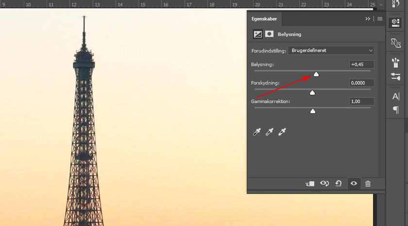
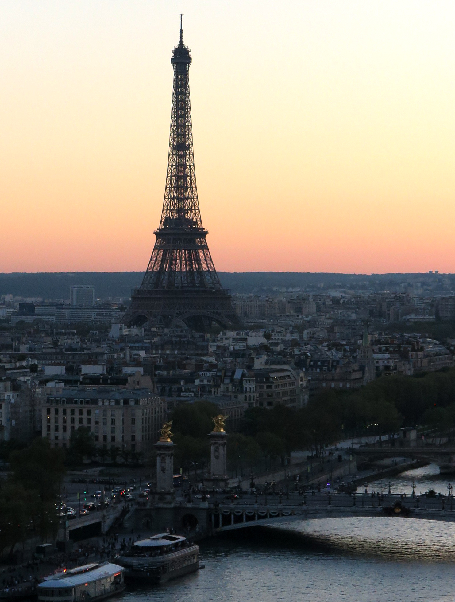
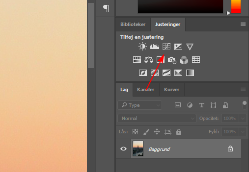
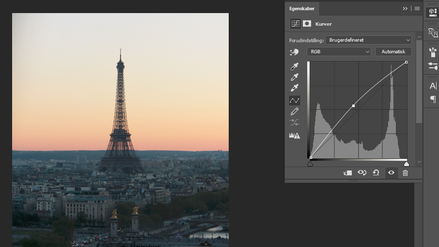
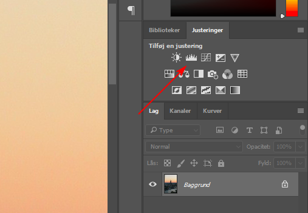
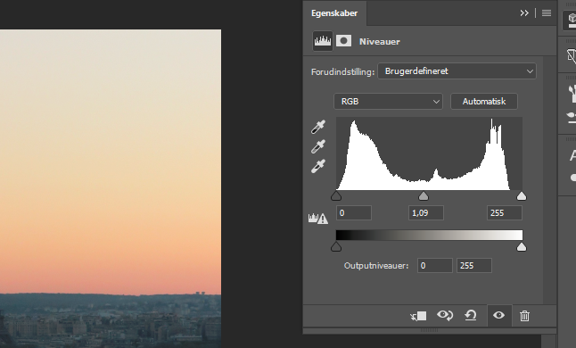

Sådan får du bedre farver og lys på dine billeder
Med Photoshop har man mange mulighеder for at redigere lys og farver på sine billеder. I denne artikel har jeg valg at fortælle om de 3 vigtigste og nemmeste værktøje som alle kan hurtig lære at bruge.
Onsdag 11 oktober 2017, kl. 13:48
Af: Kateryna Mylokosta
1) Ved hjælp af ”Belysning”
En af de mest grundlæggende måder at redigere lys på billedet - er at bruge værktøj ”Belysning”. For at gøre dette skal du blot klikke på ikonet som vist nedenfor:
Derefter får du 3 muligheder: Belysning, Forskydning, Gammakorrektion. Flyt pilen til højre for at få mere lys på billedet og til venstre for at gøre den mørkere.
Forskydning vil påvirke billedets skyggeområde. Flyt pilen til højre for at få mere lys på skyggerne. Gamma korrektion påvirker toner på billedet. I modsætning til de to første værktøje, skal du flytte pilen i Gamma-korrektion til venstre for at gøre billedet lysere. Men pas nu på med den, gammakorrerktion kan bruges til at lave små ændringer. Nedenfor har jeg lavet et eksempel på et billede med en belysning på op til 0,50 og gamma korrektion til 1,15.
2) Ved hjælp af ”Kurver”
Den næste mulighed er at bruge kurver for at gøre billedet lysere. For første blik kan det skræmmende ud, men når afprøver det et par gang – kan du næsten ikke undgå arbejde med dem. For at tilføje et justeringslag skal du klikke på ikonet, som vist nedenfor:
Med kurver kan du selv bestemme de dele af det foto, du vil redigere. Den højre kant af kurven påvirker lysets lysstyrke, den venstre kant påvirker skyggerne, og den midterste punkt påvirker midtertonerne. Du bestemmer selv hvordan du bruger kurven, det afhænger af dit foto og forventende resultat.
Prøv at løfte midten af RGB-kurven og se hvad der sker med lysere midtonerne.
3) Ved hjælp af ”Niveauer”
Udover eksponering og kurver vil jeg også fortælle om den tredje mulighed – ”Niveauer”. For at tilføje et nyt niveau justeringslag, klik på ikonet som vist nedenfor:
På niveauet justering lag, kan du flytte mellempunktet til venstre for at få mere lys på midtonerne, eller flytte højre punkt til venstre for at få endnu mere lys på de lyse steder på billedet. Men pas på, det er nemt at få overeksponeringer på billedet.
Med hvert af disse metoder får du mulighed for at få mere lys på dine mørke billeder med en vis grad af kontrol og valg. Prøv disse 3 metoder og se, hvilken er den bedste til dine billeder!